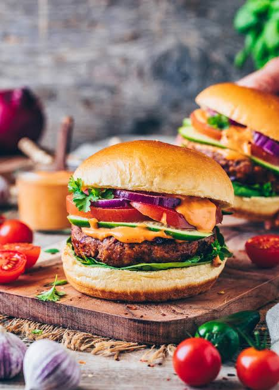

© noogurt 2026

If you’re looking for a simple vegan burger basic recipe, look no further because this one is what you need! The burger patties have the perfect texture and will hold their shape so they can be cooked both, on the stove and on the grill! Furthermore, you’ll love that this recipe is so easy to make and also to customize! While it calls for basic pantry staple ingredients, you can always get creative with the add-ins and flavors or swap out the ingredients with whatever you have on hand.